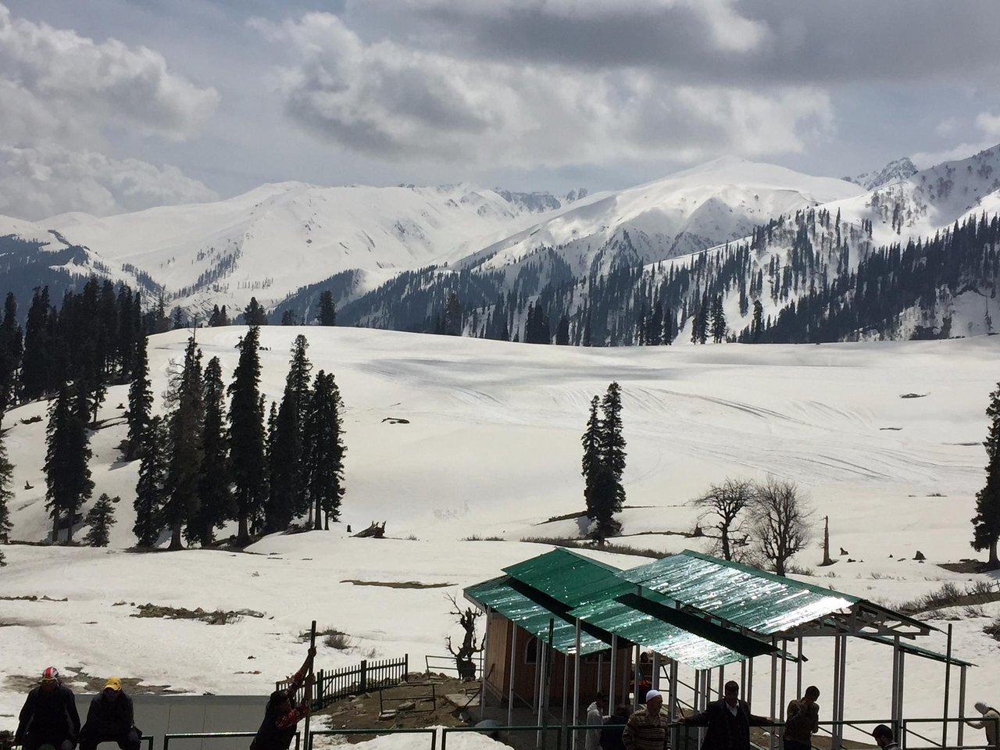
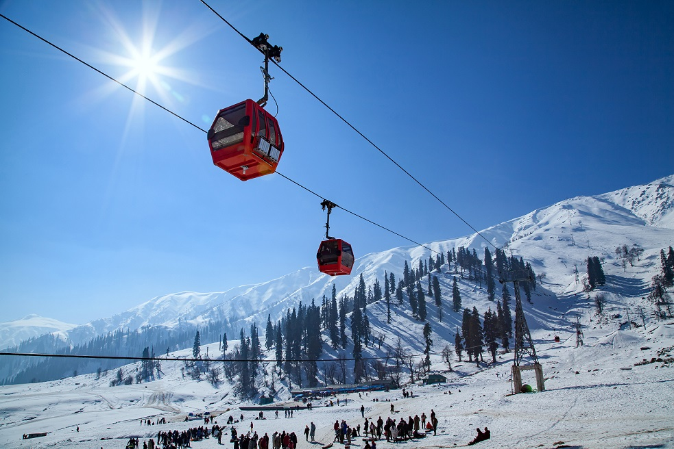
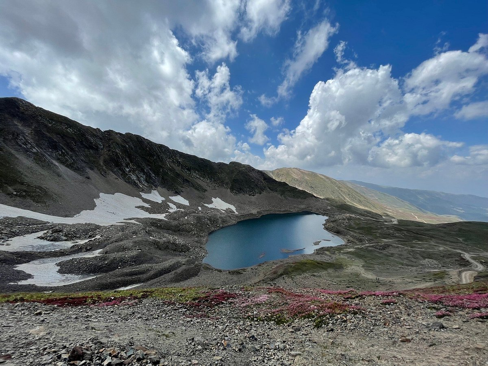
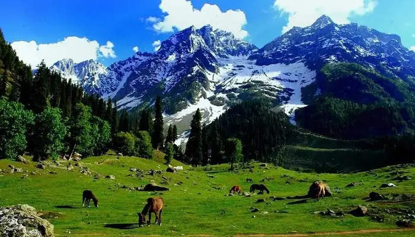
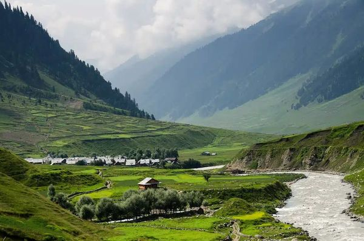
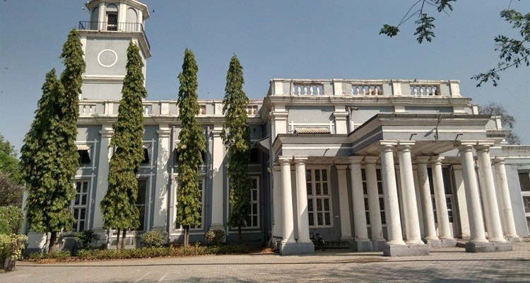
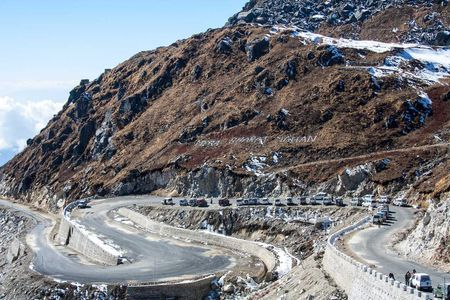
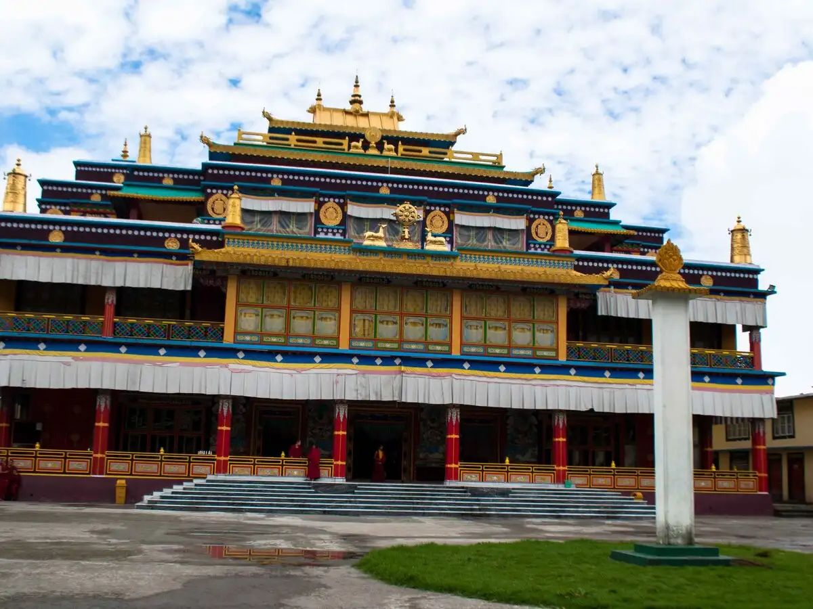
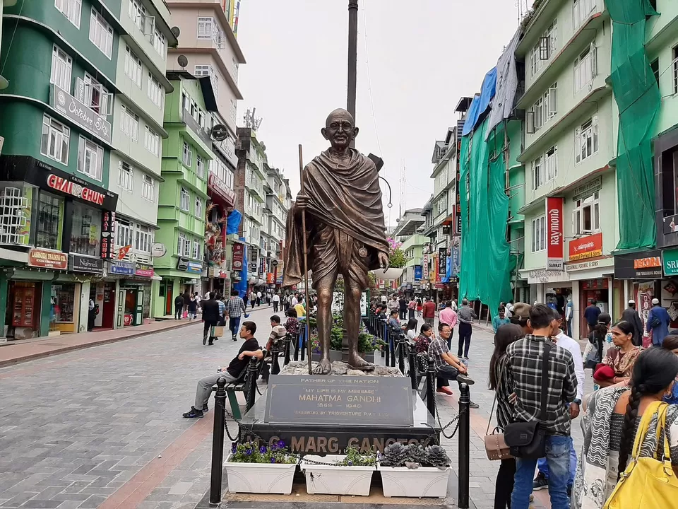
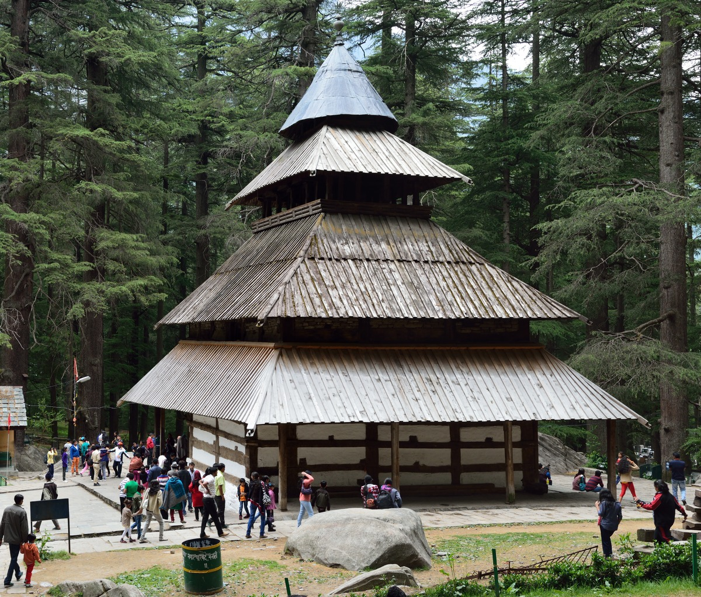

Gulmarg, a renowned hill station in Jammu & Kashmir, is famous for its stunning natural beauty,
especially its
snow-covered landscapes in winter, making it a popular destination for skiing
and other winter
sports.
1. Skiing Paradise:
Gulmarg is widely recognized as one of India's premier skiing destinations, offering a variety
of
slopes for both
beginners and experienced skiers.
2. Gulmarg Gondola:
The Gulmarg Gondola, the highest cable car in the world, is a major draw for tourists, providing
breathtaking views of
the surrounding mountains and valleys.
3. Scenic Beauty:
Gulmarg is known for its picturesque landscapes, including meadows like Khilanmarg and the
Strawberry Valley, offering
stunning views of the Himalayas and opportunities for pony rides
and photography.
4. Flora and Fauna:
Gulmarg Biosphere Reserve, also known as Gulmarg Wildlife Sanctuary, is a protected area that
is
home to a diverse range
of flora and fauna, making it a great spot for nature enthusiasts and
birdwatchers.
5. Historical and Cultural Significance:
Gulmarg has a rich history, with mentions of its use by Mughal emperors and its significance
as a
pilgrimage site for
the Shrine of Baba Reshi. The Maharani Temple and St. Mary's Church
are also notable landmarks in
Gulmarg.

The Gulmarg Gondola is a high-altitude cable car in Gulmarg, Kashmir, known for its stunning views and
access to skiing
and snowboarding. It has two phases, with the second reaching Apharwat Peak, and is the world's
second-highest operating
cable car.
1. Two-Phase System:
Phase 1: Gulmarg to Kongdori, offering views of meadows and forests.
Phase 2: Kongdori to Apharwat Peak, providing panoramic views of the Himalayas.
2. Booking and Timings:
Tickets can be booked online, and it's advisable to book in advance, especially during peak season.
The Gondola typically operates from 10:00 AM to 5:00 PM, but timings can vary due to weather conditions.
3. Important Considerations:
Altitude:
Be prepared for altitude sickness, especially at Apharwat Peak (13,400 ft). Move slowly and stay
hydrated.
Weather:
The weather in Gulmarg can be unpredictable, especially in winter. Check the weather forecast before
your visit.
4. Activities:
Skiing and Snowboarding: Gulmarg is a popular destination for winter sports, with skiing and
snowboarding available at
Kongdori and Apharwat Peak.
ATV rides and sledding: These are available at Phase 1 (Kongdori).
5. General Tips:
Carry a valid ID for ticket verification.
Be aware of potential scams from horse owners and agents offering tickets or transportation to the
boarding point. The
walk is easy and tickets can be purchased online.
Carry cash for potential purchases or activities.

Alpather Lake, a high-altitude glacial lake near Gulmarg, is known for its scenic beauty and is
a
popular destination
for nature lovers and adventure seekers.
1. Location and Trek:
The lake is situated 13 km from Gulmarg, at the foot of the twin Apharwat Peaks, and requires a
trek
from Gulmarg. The
trek is moderately difficult and takes about a day to complete.
2. Frozen Beauty:
Alpather Lake is often referred to as the "Frozen Lake" as it remains frozen from November to
June.
In winter, it offers
a surreal sight of a frozen lake with ducks walking on the ice.
3. Summer Scenery:
In summer, the lake is surrounded by lush green meadows and wildflowers, making it a
picturesque
spot for picnics and
relaxation.
4. Altitude and Weather:
The lake is at a high altitude, and the weather can be unpredictable. It's essential to be prepared
for cold conditions
and carry appropriate clothing, including warm layers.
5. Essential Tips:
Visitors should carry sufficient food and water, as there are no eateries near the lake.
Trekking
shoes are recommended,
and it's wise to hire a local guide for the trek,
especially if unfamiliar with the route.

Khilanmarg, a picturesque meadow near Gulmarg, is known for its stunning Himalayan views, vibrant
wildflowers, and
opportunities for skiing and trekking. It's a relatively less crowded alternative to Gulmarg, offering a
serene escape
with diverse activities throughout the year
1. Scenic Beauty and Views:
Khilanmarg boasts panoramic views of the Himalayan peaks, including Nanga Parbat and the twin peaks Nun
and Kun. The
meadows are covered in wildflowers in spring and early summer, transforming into a snowy wonderland in
winter.
2. Year-Round Destination:
While popular for winter sports like skiing and snowboarding, Khilanmarg is also a great destination for
summer treks
and enjoying the natural beauty.
3. Proximity to Gulmarg:
Located just 6 kilometers from Gulmarg, it's easily accessible by pony ride or a short trek, making it a
convenient day
trip or part of a longer itinerary.
4. Activities:
Besides skiing, Khilanmarg offers opportunities for trekking, photography, and enjoying the tranquil
surroundings. It's
also a good base for exploring other nearby attractions like Alpather Lake and the Gulmarg Biosphere
Reserve.
5. Peaceful Escape:
Khilanmarg provides a quieter, less commercialized experience compared to Gulmarg, making it ideal for
those seeking
solitude and a closer connection with nature.

Strawberry Valley in Gulmarg is a scenic spot known for its strawberry farms, lush greenery,
and
stunning mountain
views. It's a popular destination for nature lovers, offering opportunities
for picnics,
photography, and peaceful
walks. The valley is particularly beautiful during the
summer months (April to September) when the
strawberries are
ripe, and the landscape is vibrant.
1. Strawberry Farms:
The valley is famous for its strawberry farms, where visitors can enjoy fresh, locally
grown
strawberries.
2. Scenic Beauty:
Strawberry Valley is a picturesque spot with lush greenery, rolling hills, and breathtaking
mountain
views, making it
ideal for nature walks and photography.
3. Best Time to Visit:
The best time to visit is during the summer months (April to September) when the strawberries
are in
season and the
weather is pleasant.
4. Activities:
Besides enjoying the strawberries and scenery, visitors can also go for picnics, nature walks,
and
photography.
5. Location and Accessibility:
Strawberry Valley is located a short distance from Gulmarg town, and can be reached by
hiking or
hiring a pony.

St. Mary's Church, particularly the one in Chennai (Madras), is significant as the oldest surviving
British church in
India, built in 1680. It's located within Fort St. George and is known for its historical importance,
well-maintained
state, and peaceful atmosphere. The church also contains notable tombstones and memorial plaques,
offering a glimpse
into the layered history of the British presence in India.
1. Historical Significance:
It's the oldest British church in India, dating back to 1680, making it a valuable historical
landmark.
2. Architectural Importance:
The church is located within Fort St. George, showcasing British colonial architecture and design.
3. Well-Preserved State:
It's noted for being well-maintained, allowing visitors to experience its historical atmosphere.
4. Peaceful Ambiance:
The church is known for its serene and peaceful environment, providing a space for quiet
contemplation.
5. Historical Artifacts:
St. Mary's Church houses tombstones and memorial plaques that offer insights into the lives and legacies
of individuals
from the British colonial era

Nathula Pass, a high-altitude mountain pass in Sikkim, India, is significant for its historical
importance as a trade
route between India and Tibet, its stunning views, and its role as a symbol
of peace between India
and China. It is also
a site of military importance, with restrictions
on entry, and requires acclimatization due to its
high altitude.
1. Historical Significance:
Nathula Pass served as a major trade route between India and Tibet for centuries, connecting the
two
regions. It was
also a site of military conflict between India and China in 1967.
2. Strategic Location:
The pass sits at an altitude of approximately 14,140 feet (4,310 meters) and forms part of the
border between India and
China.
3. Restrictions and Permits:
Due to its strategic location and security concerns, only Indian citizens with valid permits
are
allowed to visit
Nathula Pass. Children below 5 years of age are not permitted.
4. Stunning Views:
Nathula Pass offers breathtaking panoramic views of the surrounding Himalayan landscape
and the
Indo-China border.
5. Altitude and Acclimatization:
The high altitude requires visitors to acclimatize to the thin air to avoid altitude sickness.
Spending a day or two in
Gangtok, which is at a lower altitude, is recommended before
visiting Nathula Pass, according to
Sikkim Tourism.

Rumtek Monastery, a significant Tibetan Buddhist monastery in Sikkim, is notable for its religious,
cultural, and
architectural importance. It serves as the seat of the Karma Kagyu lineage, houses numerous religious
artifacts and
scriptures, and showcases intricate Tibetan-style architecture. The monastery is a center for Buddhist
learning and
practice, and its serene atmosphere attracts both pilgrims and tourists.
Monastery:
1. Seat of the Karma Kagyu Lineage:
Rumtek is the principal seat in Sikkim for the Karma Kagyu school of Tibetan Buddhism, the third-largest
Buddhist school
in Tibet.
2. Architectural Marvel:
The monastery is renowned for its traditional Tibetan architecture, featuring intricate murals, thangkas
(religious
paintings), and a golden stupa.
3. Repository of Religious Artifacts:
Rumtek houses a vast collection of religious texts, sacred objects, and relics of the 16th Karmapa,
making it a treasure
trove of Buddhist heritage.
4. Spiritual Center:
The monastery serves as a vibrant center for Buddhist practice, prayer, and learning, offering a glimpse
into the daily
life of monks and the rituals of Tibetan Buddhism.
5. Scenic Location:
Situated amidst the Himalayan landscape, Rumtek offers stunning views of the surrounding mountains and
valleys,
enhancing the overall spiritual experience.

MG Marg, the heart of Gangtok, is a pedestrian-only street known for its vibrant atmosphere,
shopping, and dining
options. It's a popular spot for both locals and tourists, offering a mix of
traditional Sikkimese
crafts, trendy
clothing, and delicious local cuisine.
1. Pedestrian-only street:
Vehicles are not allowed on MG Marg, making it a safe and enjoyable space for walking
and exploring.
2. Shopping destination:
You can find a variety of shops selling traditional Sikkimese artifacts, Tibetan carpets,
thangka
paintings, wood
carvings, and trendy clothing.
3. Dining and nightlife:
Several restaurants and cafes offer delicious local cuisine, including momos and thukpa.
Some
establishments also have
bars and clubs staying open late.
4. Clean and colorful environment:
MG Marg is well-maintained and features a vibrant atmosphere with colorful buildings and
decorations.
5. Popular gathering place:
It's a central hub for social活动 and relaxation, attracting both locals and tourists.
6. Proximity to other attractions:
MG Marg is conveniently located near other popular attractions like Enchey Monastery,
Do Drul
Chorten, and the Gangtok
Ropeway.

The Hadimba Devi Temple, located in Manali, Himachal Pradesh, is a significant Hindu temple known for
its unique
architecture and mythological ties.
1. Unique Architecture:
The temple is built in the pagoda style, with a four-tiered wooden roof and a conical shape. It is
primarily constructed
from wood, featuring intricate carvings of mythological figures, animals, and floral patterns.
2. Mythological Significance:
It is dedicated to Hidimba Devi, a character from the epic Mahabharata, who was the wife of Bhima, one
of the Pandava
brothers. The temple is built on a rock protrusion where Hidimba is believed to have meditated.
3. Cultural Importance:
The temple is a major religious and cultural site, attracting large crowds, particularly during
festivals like Navratri.
The annual Dhungri Mela, celebrating Hidimba Devi's birthday, is a major event.
4. Historical Construction:
The temple was built in 1553 CE by Maharaja Bahadur Singh, according to BanBanjara and is situated
amidst a dense cedar
forest.
5. Spiritual Significance:
The temple is revered for its divine aura, and devotees seek blessings from Hidimba Devi, believed to be
a powerful and
revered goddess. There is a footprint inside the temple, considered a sacred mark of her presence.